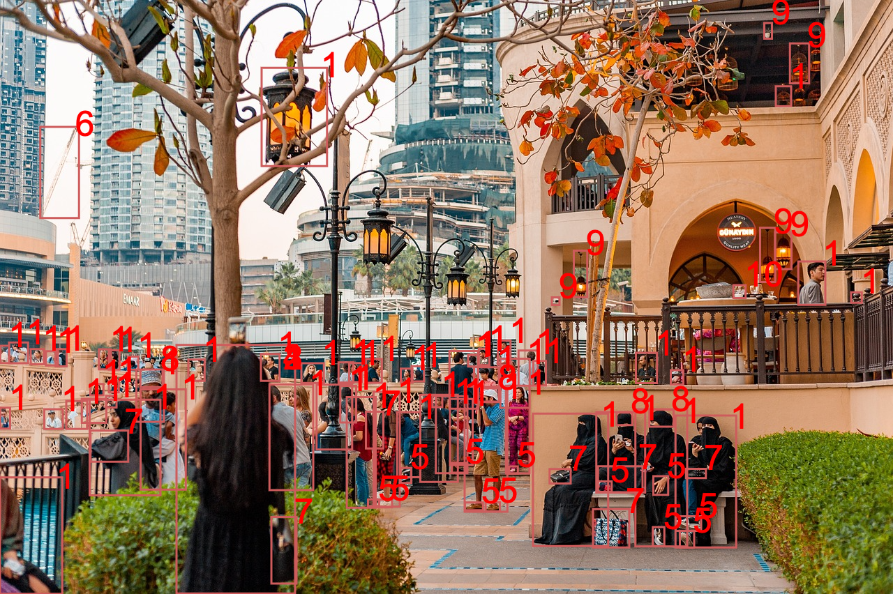

Kompiuterinė rega
Pasirinkti vaizdą


Miesto vaizdas
| Žymeklis | Patikimumas |
| Miestas | 100 % |
| Šortai1 | 99 % |
| Batas 2 | 99 % |
| Žmogus 3 | 99 % |
| Krepšys | 97 % |
| Rankinė 4 | 96 % |
| Sandalas 5 | 90 % |
| Žymeklis | Patikimumas |
| Šuo 6 | 90 % |
| Kambarinis gyvūnas | 86 % |
| Ratas 7 | 85 % |
| Dviratis 8 | 80 % |
| Transporto priemonė | 78 % |
| Gatvės žibintas | 75 % |
| Virvė | 60 % |
Statybos aikštelė
| Žymeklis | Patikimumas |
| Žmogus 1 | 100 % |
| Šalmas 2 | 100 % |
| Statyba 3 | 76 % |
| Suaugusysis 4 | 99 % |
| Vyras 5 | 99 % |
| Žymeklis | Patikimumas |
| Sunkvežimis 6 | 88 % |
| Avalynė 7 | 88 % |
| Ratas 8 | 83 % |
| Apsauginiai akiniai | 94 % |
| Įspėjamasis ženklas | 31 % |
Vaisiai ir daržovės

| Žymeklis | Patikimumas |
| Bananas 1 | 100 % |
| Vaisius | 100 % |
| Apelsinas 2 | 85 % |
| Kriaušė 3 | 84 % |
| Vištiena 4 | 78 % |
| Citrina | 62 % |
| Obuolys 5 | 50 % |
| Žymeklis | Patikimumas |
| Pintinė | 55 % |
| Greipfrutas | 53 % |
| Pipiras | 53 % |
| Žalioji citrina | 52 % |
| Cukinija | 52 % |
| Imbieras | 51 % |
| Avokadas | 51 % |